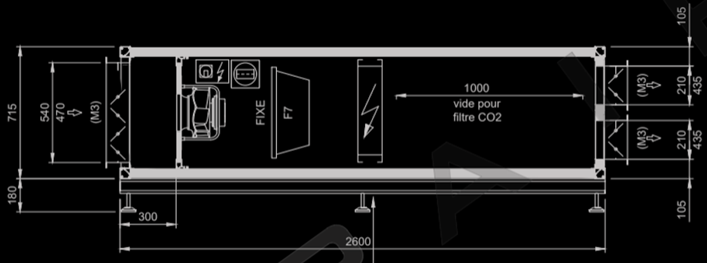
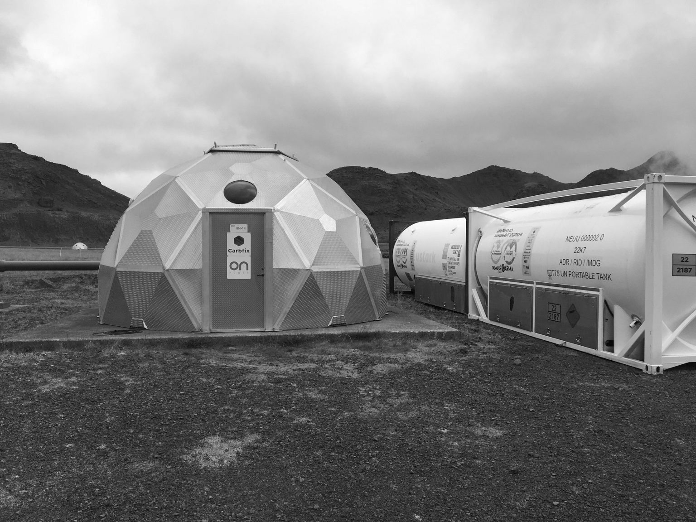

OUR IDEA
At the Carbon Team, we develop a prototype able to capture CO2 with cheap material and low energy so that the process can be easily scaled up!


But we also research ways to permanently store the CO2 underground
